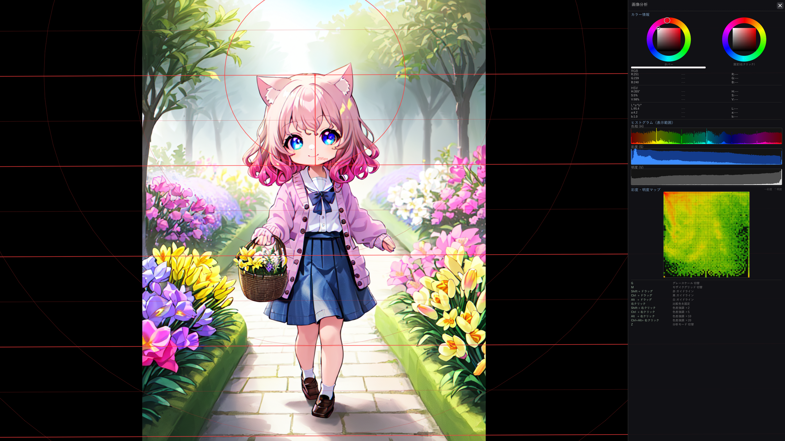
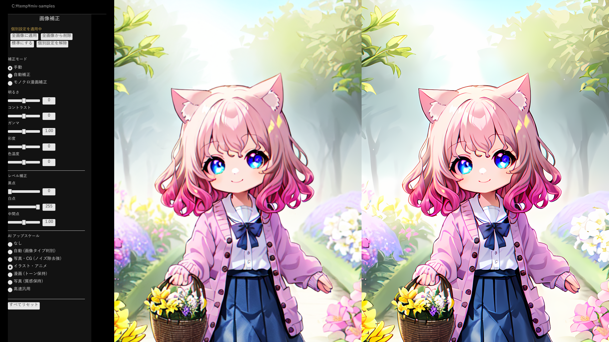
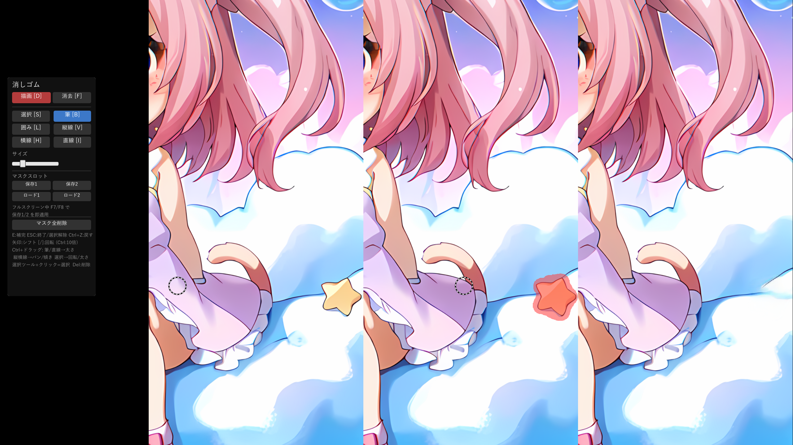
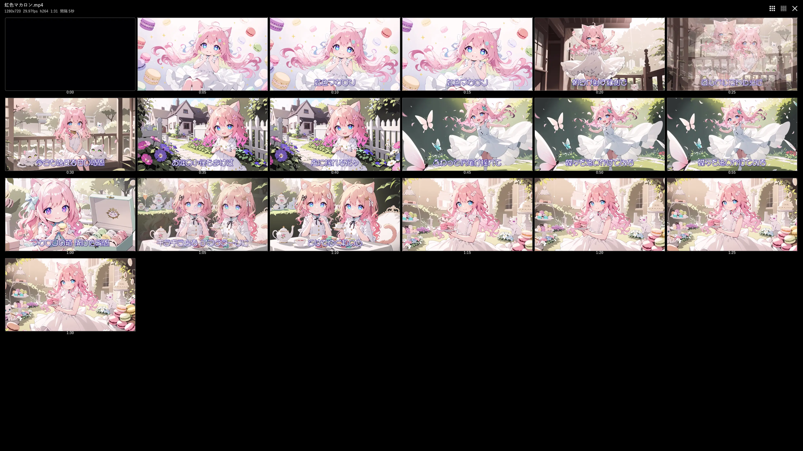
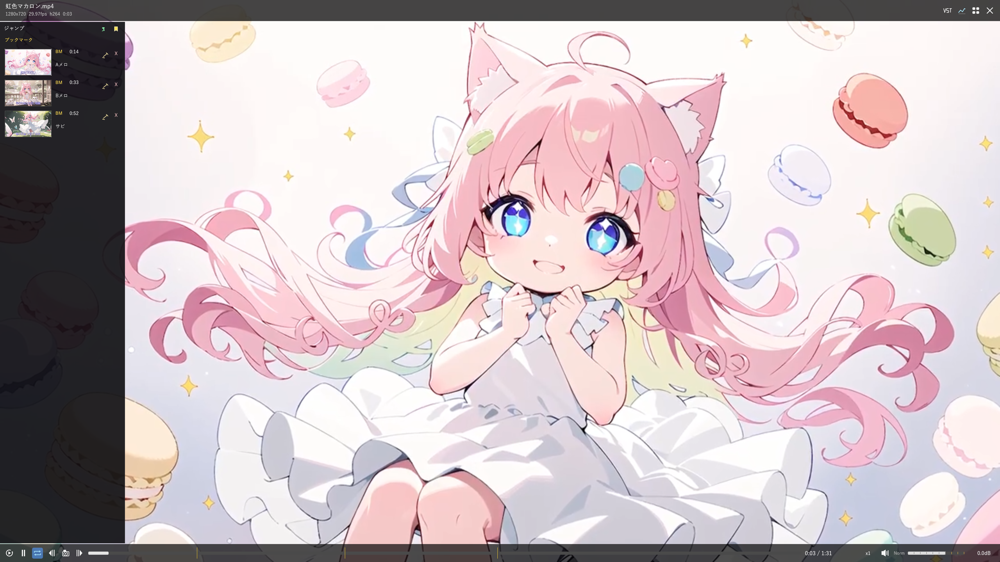
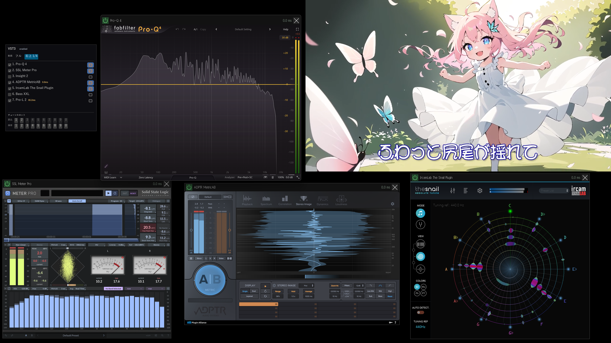

概要
mImageViewer は、大量の画像を快適に閲覧するための Windows 11 向け画像ビューワーです。 GPU アクセラレーションを使ったサムネイルグリッド表示と、サムネイルキャッシュにより、 同じフォルダを再度開いたときは瞬時に表示されます。
AI アップスケール (Real-ESRGAN / Real-CUGAN / NMKD-Siax) を内蔵し、低解像度の画像も高精細に拡大して閲覧できます。 さらに消しゴムツールによる AI 非破壊修復 (MI-GAN) で、スキャン汚れ・傷・綴じ跡などを 元のファイルを書き換えずにマスクで補修でき、いつでも元の状態に戻せます。 隠蔽加工と Ctrl+E エクスポートにより、モザイク・塗りつぶし・ぼかしを反映した別ファイルも安全に書き出せます。
標準は DirectML で全 DirectX 12 対応 GPU で動きますが、NVIDIA GeForce RTX 30 / 40 / 50 シリーズ 利用時は環境設定から TensorRT バックエンドに切り替えることで AI 処理を大幅に 高速化できます（アップスケール 1.4〜3.4 倍、ノイズ除去 約 4.5 倍）。専用ランタイム (約 1.97 GB) は ボタン 1 つで自動ダウンロードされ、アプリの再起動なしですぐ有効になります。
旧来の 32bit ビューワー「ViX」にインスパイアされ、現代の環境に合わせて Rust でゼロから実装しました。
スクリーンショット








インストール方法・操作方法・キーボードショートカット・設定リファレンスなど、詳しい使い方はマニュアルをご覧ください。
主な機能
高速サムネイルキャッシュ
生成したサムネイルをキャッシュに保存し、2回目以降は瞬時に表示。キャッシュ生成ポリシーは Off / Auto / Always から選択可能。可視範囲を最優先で読み込みます。
JPEG 高速デコード
TurboJPEG (libjpeg-turbo) の SIMD 命令で JPEG を 1.5〜2.4 倍高速にデコード。大量の写真フォルダでもサクサク表示。
フルスクリーン表示
画像をクリックするとフルサイズ表示。モニター全面の全画面表示と、mImageViewer のウィンドウ内に収める表示をワンクリックで切り替え可能。前後の画像をプリフェッチ。Ctrl+ホイールでズーム、ドラッグでパン、Ctrl+ドラッグで任意角度回転。
アニメーション再生
アニメーション GIF・APNG をフルスクリーンでそのまま再生。
動画インライン再生
MP4・AVI・MKV などの動画を外部プレイヤーなしで再生。全画面表示とウィンドウ内表示をワンクリックで切り替えでき（再生中の切り替えでも音声は途切れません）、0.5x〜3.0x の倍速再生（音声はピッチ維持）、-∞dB〜+18dB の音量ブースト、レジューム再生、ループ / チャプター / ブックマーク、現在フレームのコピーに対応。動画ごとに音量を揃えるラウドネス正規化も搭載しています。
動画タイルモード
フルスクリーンで S キーを押すと、動画全体を一定間隔のサムネイルで一覧表示。長い動画の中身を一目で把握でき、サムネイルのクリックや強調カーソルの Enter でその位置から再生します。多数の動画を並べて素早く確認する用途にも。
VST3 プラグイン対応
動画の音声を VST3 プラグインのチェーンに通して再生。ラウドネスメーターや EQ・コンプレッサーを重ねて、動画を見ながらリアルタイムに音声を分析・加工できます。各プラグインは別プロセスで動作するため、クラッシュしても本体に影響しません。
RAW / HEIC / AVIF 対応
Windows の WIC (Windows Imaging Component) を活用し、各種 RAW・HEIC・AVIF・JPEG XL・TIFF を表示。
フォルダツリー巡回
Ctrl+↑↓ で深さ優先でフォルダを順番に移動。大量フォルダの一括確認に便利。
お気に入りフォルダ
よく使う実フォルダに名前を付けて登録。フォルダバーの♡/♥ボタンやメニューから追加・編集でき、一括キャッシュ作成・検索インデックス作成にも対応。
カスタマイズ可能なツールバー
フォルダ履歴の戻る/進む、親フォルダ、ツリー順の前/次、お気に入り、履歴メニュー、列数・縦横比（7種）・ソート順などを表示/非表示にできます。
ZIP アーカイブ対応
ZIP ファイル内の画像をフォルダ構造ごとブラウズ。展開不要でそのまま閲覧。ネストされた ZIP（ZIP in ZIP）もフラット展開で表示。
7z / LZH をクリックで ZIP 変換
7z / LZH ファイルをクリックするだけで自動的に ZIP に変換して閲覧可能に。変換は初回のみで、2 回目以降はキャッシュから即座に開けます。画像ファイルのみ抽出して最速の読み出しを実現。
Susie 画像プラグイン対応
Susie 画像プラグイン（.spi、32bit）を経由して PC-98 / X68000 時代の PI / MAG / PIC などのレトロ画像形式を閲覧可能。古いプラグインがクラッシュしても 32bit ワーカープロセスに隔離されて自動再起動するため安心。AI アップスケールとの組み合わせで 640×400 のレトロ CG を 2560×1600 画質で鑑賞できます。
ポストフィルタ (38 プリセット)
レトロ系 (CRT ブラウン管エミュ・機種別減色・CRT × 非液晶の複合) に加え、写真向けカラーグレーディング (セピア / モノクロ / Teal&Orange / Kodak Portra / Fuji Velvia / ブリーチバイパス / クロスプロセス / ビンテージ等)、アナログフィルム (グレイン / ビネット / ライトリーク / ソフトフォーカス)、絵画風 (ハーフトーン / オイルペイント / スケッチ)、シャープ化を含む 38 プリセット。T キーで順に試せます。
PDF 表示
PDF ファイルをページごとにサムネイル表示・フルスクリーン閲覧。パスワード付き PDF にも対応。並列処理で高速表示。
サムネイル画質設定
キャッシュのサイズと品質を A/B 比較プレビューで視覚的に調整。容量と画質のバランスを自分で決められる。
代表サムネを手動で指定
フォルダ・ZIP・PDF の代表サムネを、中の好きな画像 / 動画フレーム / サブフォルダ / ページに固定できます。フォルダバーの 📌 ボタンや右クリックメニューから設定でき、自動選定では出てこないお気に入りの 1 枚を表紙にできます。
AI 画像メタデータ表示
Stable Diffusion (A1111/Forge)・ComfyUI・Midjourney のプロンプト情報を PNG から自動抽出。フルスクリーンの右パネルで確認。
EXIF 表示
カメラ・レンズ・露出・GPS 等の撮影情報を表示。タグは「カメラ / 撮影 / 画像 / GPS / その他」に自動分類され、グループ単位で一括表示／非表示を切り替え可能。Exif 2.31 / 2.32 の追加タグや GPS IFD の詳細タグにも対応。
XMP ツイート情報表示
JPEG / PNG / 動画 (MP4 / MOV) に XMP 形式のツイート情報が埋め込まれている場合、フルスクリーンのメタデータパネルにツイート ID・投稿者・本文・投稿日時を表示。「ツイートを開く」「投稿者タイムライン」「URL コピー」ボタン付き。
非破壊回転
元ファイルを変更せずに画像の表示回転を保存。回転情報は専用 DB で管理。R / L キーまたはボタンで操作。
画像補正
明るさ・コントラスト・ガンマ・彩度・色温度・レベル補正をリアルタイム調整。モノクロ漫画補正等の自動補正モードも搭載。「ページ個別 → お気に入り単位の標準 → アプリ全体の標準」の 3 階層で優先順位を持ち、用途別のお気に入り（AI 生成画像・カメラ写真・スキャン画像など）ごとに異なる既定値を設定可能。一覧全体への一括適用もワンクリック。
AI アップスケール
Real-ESRGAN / Real-CUGAN / NMKD-Siax (DirectML GPU) で画像を高品質に拡大。画像タイプ（イラスト / 漫画 / 写真）を自動判定し、用途に応じた最適なモデルで処理。質感保持向けや高速軽量モデルも手動で選択可能。AI モデルは exe に埋め込み済みで追加ダウンロード不要。
AI JPEG ノイズ除去
JPEG 圧縮で生じるブロックノイズ・モスキートノイズを AI で除去。アップスケールとの併用にも対応。
見開き表示
フルスクリーンで2ページを並べて表示。左→右 / 右→左の読み方向、表紙単独表示に対応。横長画像は自動的に1ページで表示。
非破壊 AI 修復
E キーで消しゴムモードに入り、筆・囲み・直線・矩形・楕円などで汚れ・傷・綴じ跡・スキャンノイズを指定すると MI-GAN が周囲から自然に補完。縦線・横線は傾き調整でき、マスクスロット（1/2）で偶数・奇数ページへの一括適用にも対応。Undo・非破壊保存でいつでも元の状態に戻せる。
隠蔽加工
Ctrl+M でモザイク・白塗り・黒塗り・ぼかしを非破壊で重ねられます。筆・囲みのビットマップ下地に、直線・矩形・楕円などの後編集できるオブジェクトを作成順で重ね、プリセット 1〜4 も保存できます。
バリエーション一括エクスポート
Ctrl+E で現在の表示結果を JPEG / PNG / WebP として別ファイルに保存。補正・消しゴム・隠蔽加工を反映し、隠蔽プリセット 1〜4 の見た目をまとめて書き出せます。既存ファイルは上書きしません。
360 度パノラマビュー
360 度カメラの equirectangular パノラマ画像を V キーで視点を動かして閲覧。ドラッグで見回し、ホイールで画角調整、ダブルクリックで初期視点に復帰。視点が落ち着くと高解像度版を再描画して画質を引き上げます。
スライドショー
フルスクリーンで S キーまたは ▶ ボタンでスライドショー開始 / 停止。間隔は 0.5〜30 秒で設定可能。フォルダの最後まで進んだら「ループ / 次のフォルダへ / 停止」を選べます。動画は自動でスキップ。再生中もフォルダ内を移動して見たい画像だけ飛ばせます。見開きモードでは2ページずつ進行。
画像分析モード
フルスクリーンで Z キーまたは 🔬 ボタンで起動。カラーピッカー（RGB/HSV/L*a*b*）、色差 ΔE 比較、H/S/V ヒストグラム、SV マップ、色差強調、グレースケール表示、等身グリッドなど、イラスト・写真の色彩分析に特化した機能を搭載。
現在地フィルタ
Ctrl+F で今表示しているグリッドをその場で絞り込み。索引不要でどのフォルダでも使えます。画像・動画は AI プロンプト・EXIF・ファイル名・X ツイート本文 / 投稿者名・タグ・サイドカー (同名 JSON/テキスト) を、フォルダ・ZIP・PDF はファイル名を対象に一貫してフィルタ。AND / NOT / フレーズ構文に対応し、「検索対象」ドロップダウンで EXIF だけ / AI プロンプトだけ / タグだけ … と絞り込めます。
アイテム検索
Ctrl+G でお気に入り全体の画像・PDF・動画を横断検索。全文索引で 10 万件規模でも高速応答し、検索中は件数表示で状態を明示します。結果は 1 枚ずつ並ぶ「一覧」と、フォルダごとにヒット件数バッジ付きでまとめる「集約」を切り替え可能 (ヒットが多いと自動で集約へ)。集約タイルから中へドリルインでき、「お気に入り / 種別 / 検索対象 / タグ」のドロップダウンで直感的に絞り込めます。ファイル名・タグ・EXIF・AI プロンプト・PDF のタイトル / 著者 / キーワード・動画メタ・画像の隣に置いた同名ファイル (サイドカー) が対象です。
タグ機能
画像に「#原神」「#風景」のような独自タグを付けて整理。XMP dc:subject に書き込むので Lightroom・Bridge・ExifTool・digiKam・XnView MP 等の写真管理ソフトでも読み取れます。メニュー / ツールバーから選択中の画像へワンクリックでトグル、Ctrl+F / Ctrl+G のタグピッカーから検索クエリに挿入。対応形式は JPEG / PNG / WebP。既存の他ソフト由来タグは触らずに保持。
外部メタデータ（サイドカー）
画像の隣に同名で置かれた JSON / テキストファイル（画像名.json / 画像名.txt）を読み取り、フルスクリーンの右パネルに表示。作者名・作品名・元 URL・各種ラベルなど、画像本体に埋め込まれていないメタデータもそのまま閲覧でき、Ctrl+F / Ctrl+G の「サイドカー」対象でキーワード検索もできます。読み取り専用でファイルは一切書き換えません。タグ機能（#タグ）とは別系統です。
レーティング（★）
F1〜F5 で★1〜★5 のレーティングを付与、F6 で解除。ツールバーから★の数で絞り込み表示できます。
画像・動画・ZIP 内画像・PDF ページに加え、フォルダ・ZIP・PDF 本体にも Shift+F1〜F6 でコンテナ★を付けられるので、
フォルダ一覧画面で「★4 以上のフォルダだけ表示」といった絞り込みができます。
フィルタ有効時はフォルダ・ZIP・PDF のサムネに「中にあるマッチ件数」のバッジが出るので、深い階層に埋もれた★付きファイルも探しやすい。
フォルダバーには現在表示中 / 全サムネイル数（例: ( 20/100)）も出るので、絞り込み後の残数がすぐ分かります。
★フィルタバッジは Ctrl+クリックで「その★だけに絞る」、Shift+クリックで「その★以上に絞る」のショートカット操作が可能（再度で全 ON に戻るトグル式）。
レーティングは Lightroom / Windows エクスプローラ「評価」列と互換な XMP xmp:Rating 書き出しにも対応（opt-in。JPEG / PNG / WebP）。
Ctrl+A でフィルタ中の全アイテムを一括チェック。誤操作した場合は Ctrl+Z で取り消し、Ctrl+Y でやり直し（タグ操作・画像補正のスライダー / U・N・T キー / Ctrl+1〜0 のスロット適用も同様、一括操作も 1 回でまとめて元に戻る）。
コンテナ検索
Ctrl+S でお気に入り配下のフォルダ・ZIP・PDF を名前で横断検索。高速な部分一致検索で、種別ドロップダウンでフォルダ / ZIP / PDF に絞り込めます。結果から入ったフォルダは BS でスタック戻り、Ctrl+↑↓ で結果内を前後移動。
自動索引管理
お気に入り単位で「コンテナ索引」「アイテム索引」を個別に ON/OFF 可能。有効化するとバックグラウンドで自動的にファイルシステムを監視し、追加・更新・削除を差分検出して索引を常に最新に保ちます。起動時には整合性チェックを行い、前回動作時の取りこぼしも自動で補正します。
タスクトレイ常駐
ウィンドウを閉じてもタスクトレイに常駐させ、ファイル変更の監視とインデックス更新を継続。次に開いたときの整合性チェック待ちを省けます。格納時は動画再生などのフルスクリーン表示を閉じ、動画デコーダ・音声出力・アイドル状態の GPU 動画プールなどの重いリソースを解放（VST3 プラグインチェーンは維持）し、アイドル中は並列度を自動で絞って I/O 負荷を低減。インストーラでアップデートする際は常駐中でも自動でクリーン終了します。
外部追加ファイルの自動反映
ウィンドウに戻ったタイミングで現在のフォルダを自動チェックし、別のアプリ（画像生成ツール等）で追加・削除されたファイルを手動リロード不要で反映します。選択中のサムネイルはそのまま維持し、画面外になった場合はスクロールで見える位置に戻します。
右クリックメニュー
パスコピー・画像コピー・カット・フォルダを開く・回転・削除（ゴミ箱）。アイテムがない場所では現在のフォルダのパスコピー / フォルダを開く操作ができます。複数選択にも対応。フルスクリーン中も右クリック長押しでメニュー表示。
ドラッグ＆ドロップ
サムネイルを掴んでエクスプローラーや他のアプリへドラッグするとファイルをコピー。複数選択した画像・動画・フォルダ・ZIP / PDF をまとめて送り出せます。逆にエクスプローラーからウィンドウへドロップすると、表示中のフォルダへコピーできます。
同名ファイル処理
同名の ZIP/PDF/7z/LZH + フォルダ、動画+画像、複数拡張子の画像を自動整理。拡張子の優先度もカスタマイズ可能。
ルーペ機能
フルスクリーン中に Shift を押している間だけ、または M キーのトグルでカーソル周辺を拡大表示。見開き・消しゴム・画像分析モードでも併用可能。
UI テーマ（ライト / ダーク）
「システム」モードは Windows のアプリ用テーマに追従し、起動後の OS 設定変更にもリアルタイムで反映。手動でライト / ダークに固定することも可能。
透過画像の背景色切替
透過 PNG / WebP / GIF をフルスクリーンで表示中、B キーで背景を 黒 → 白 → 市松 の順に循環。AI アップスケール表示中は黒 ↔ 白の 2 段で切り替えます。
対応フォーマット
静止画：JPEG、PNG、GIF、WebP、BMP（内蔵）／ HEIC・AVIF・JPEG XL・TIFF・各社 RAW（WIC 経由）
アニメーション：アニメーション GIF、APNG
動画：MP4、AVI、MOV、MKV、WMV、MPEG（サムネイル表示 + フルスクリーン再生）
ドキュメント：PDF（ページごとに表示、パスワード付き対応）
アーカイブ：ZIP（展開不要でブラウズ可）
動作環境
- OSWindows 11（64bit）
- GPUDirectX 12 対応グラフィックカード（wgpu バックエンド使用）
- メモリ4GB 以上推奨
- ランタイム不要（単体 exe、インストール不要）
ダウンロード
単体 exe 版：任意のフォルダに置いて実行するだけで使えます。アンインストールはファイルを削除するだけ。
いずれの場合も、設定は
%APPDATA%\mimageviewer\ に保存されます。
ライセンス
mImageViewer は MIT License で公開されています。 無料でご利用いただけます。
本ソフトウェアは「現状のまま」提供され、作者は一切の保証を行いません。 詳細はライセンス全文をご確認ください。